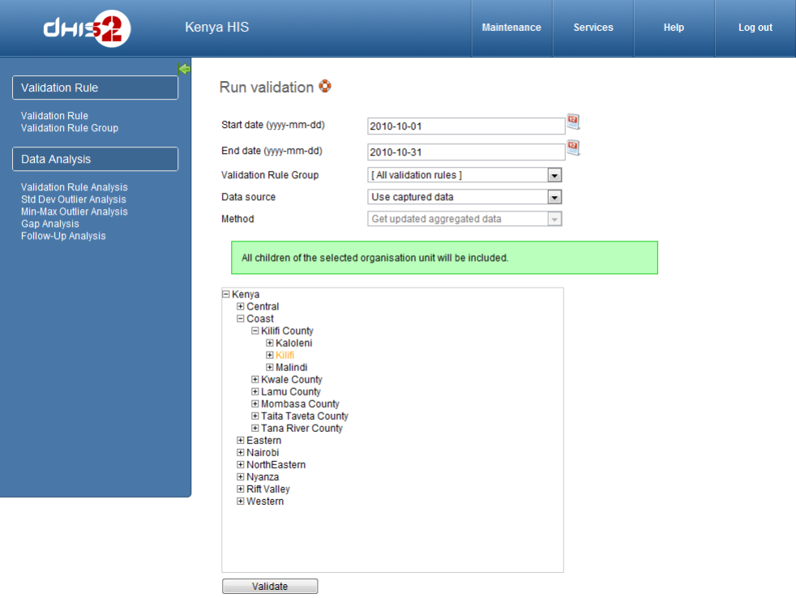
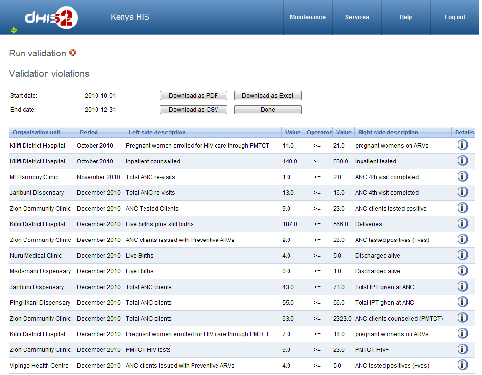

You can access Validation Rule Analysis from the Services->Data Quality menu.
A validation rule is based on an expression which defines a relationship between a number of data elements. The expression has a left side and a right side and an operator which defines whether the former must be less than, equal to or greater than the latter. The expression forms a condition which should assert that certain logical criteria are met. For instance, a validation rule could assert that the total number of vaccines given to infants is less than or equal to the total number of infants.
The validation rule analysis function will test validation rules against the data registered in the system. Validation violations will be reported in cases where the condition defined through the validation rule expression is not met, i.e. the condition is false.
Selecting what data to validate:
First, enter a start date and an end date for which data should be included in the analysis. The date picker widget may be used to select dates.
Second, choose between including all validation rules or all validation rules from a single group.
Third, choose between including the selected organisation unit only or the selected organisation unit with all children in the analysis. Fourth, select the organisation unit. Finally, click validate.
|  |
Validation results:
The analysis process will run for a while depending on the amount of data that is being analysed. If there were no violations of the validation rules a message saying validation passed successfully is displayed.
If validation violations were found, they will be presented in a list. The organisation unit, period, left side description and value, operator, and right side value and description for each validation violation are displayed.
The show details icon can be clicked in order to get more information about a validation violation. This will open a popup screen that provides information about the data elements included in the validation rules and their corresponding data values. This information can be used in order to fix incorrect data.
The validation violations can be exported to a PDF document by clicking on the Download as PDF button, and to a Microsoft Excel workbook by clicking on the Download as Excel button.
|  |